POSTPost-Kundalini Drawings/Sketches
In the months preceding the Kundalini awakening I was working intensely to create an "Artist's Portfolio" for my applications to architecture schools. Most of the artwork I had done up to this point was the typical technical school level technical drafting of floor plans and elevations. So I started drawing scenes of objects to came to mind or landscapes & natural objects with a focus of 3-Dimensionality and realism. I also had taken some anatomical drawing classes with a teacher that emphasized classical anatomy and "seeing into space". Some of these are from those classes, most are simply imagined fantasies of the human form.
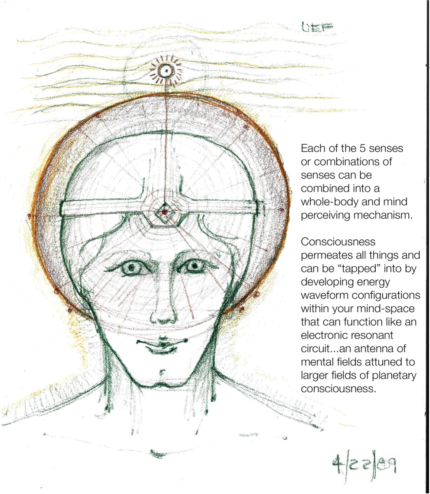
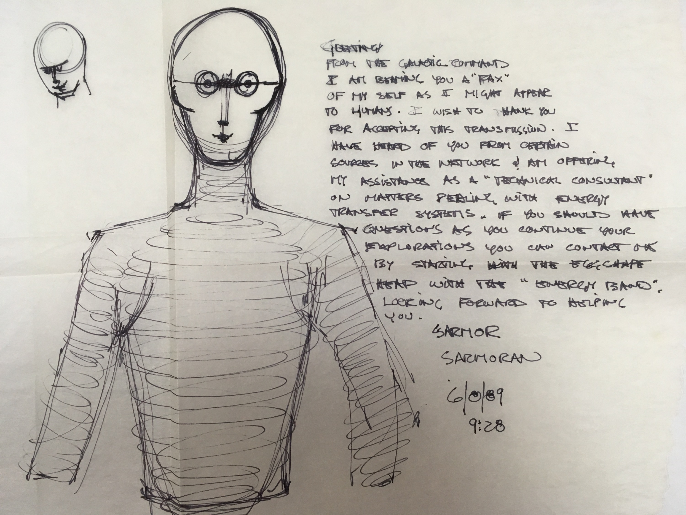
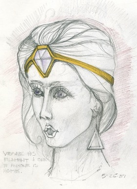
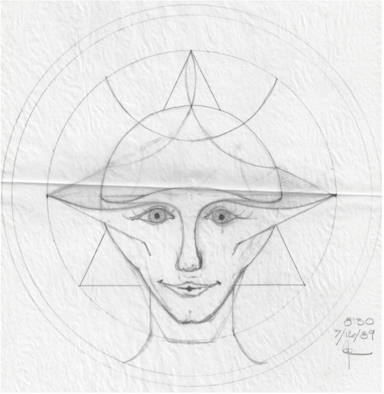
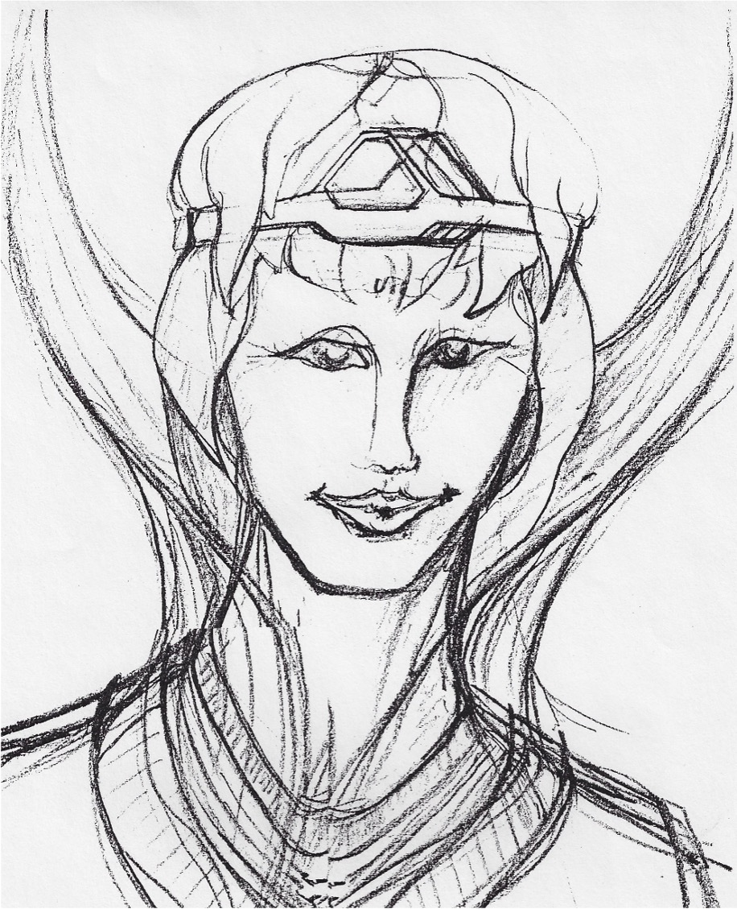
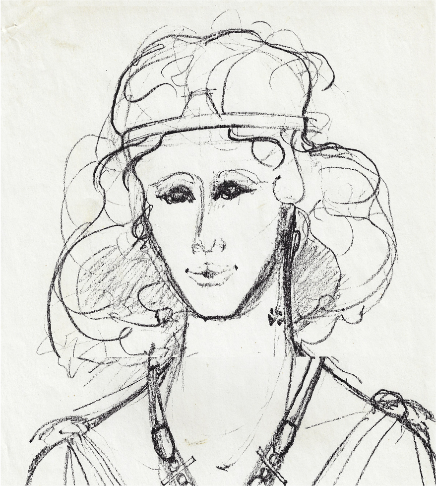
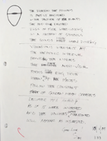
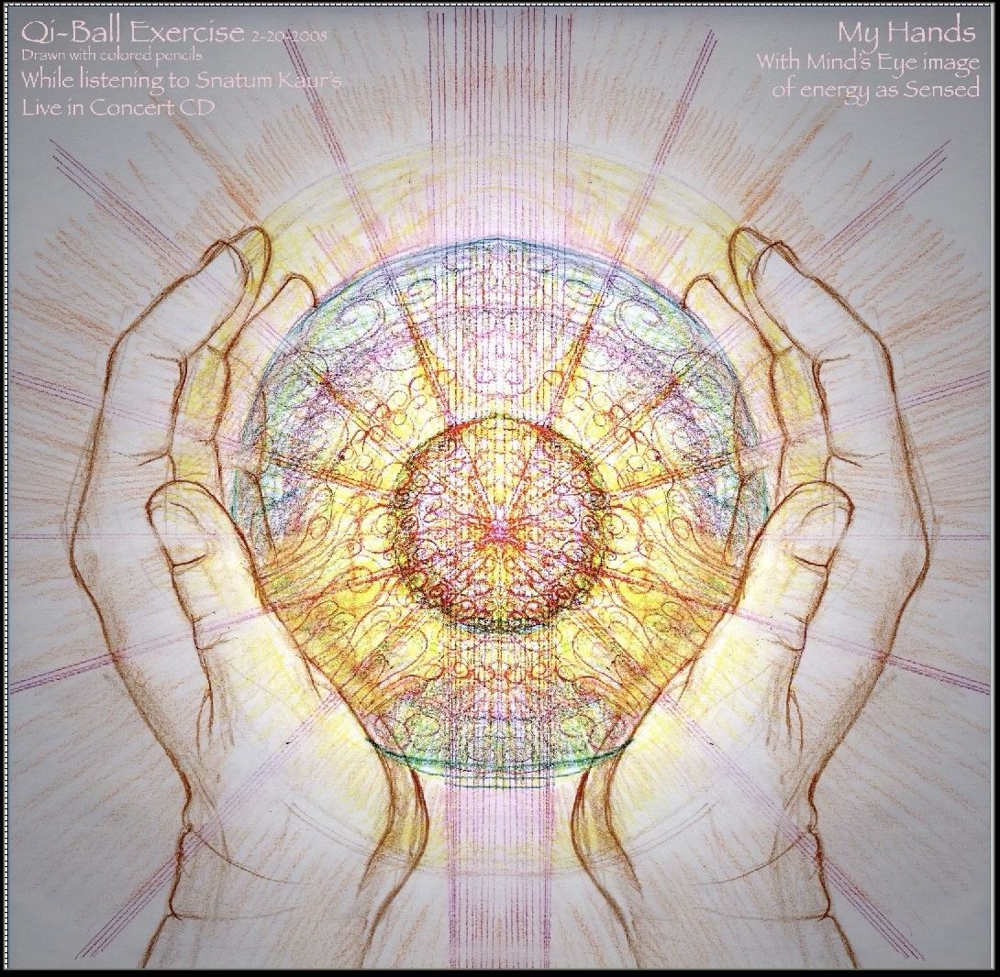
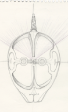
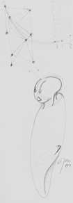
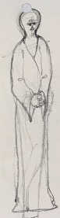
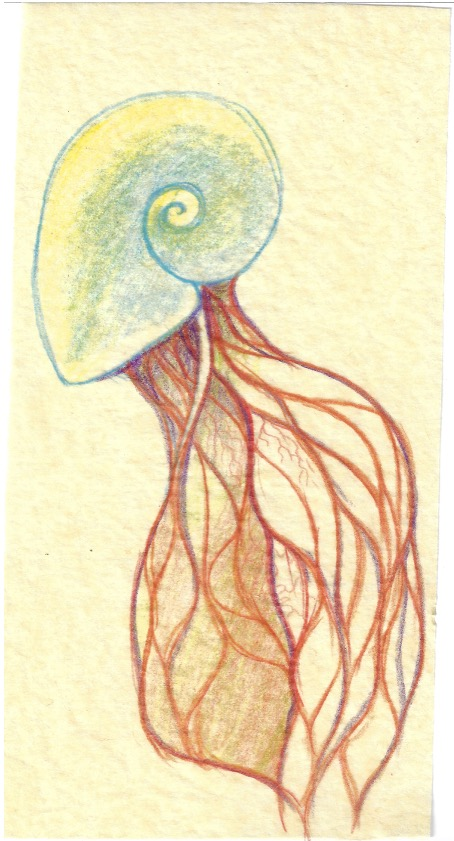
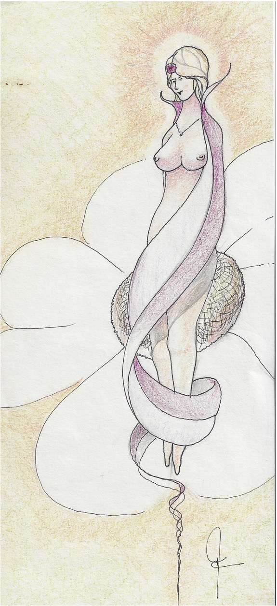
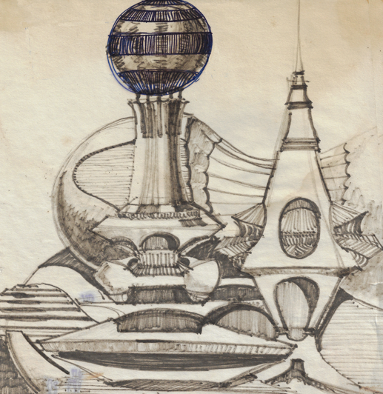
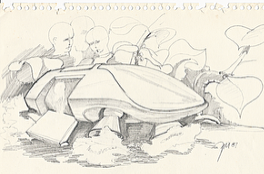
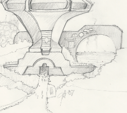
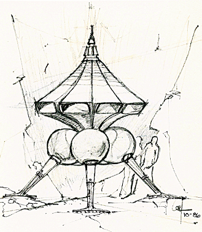
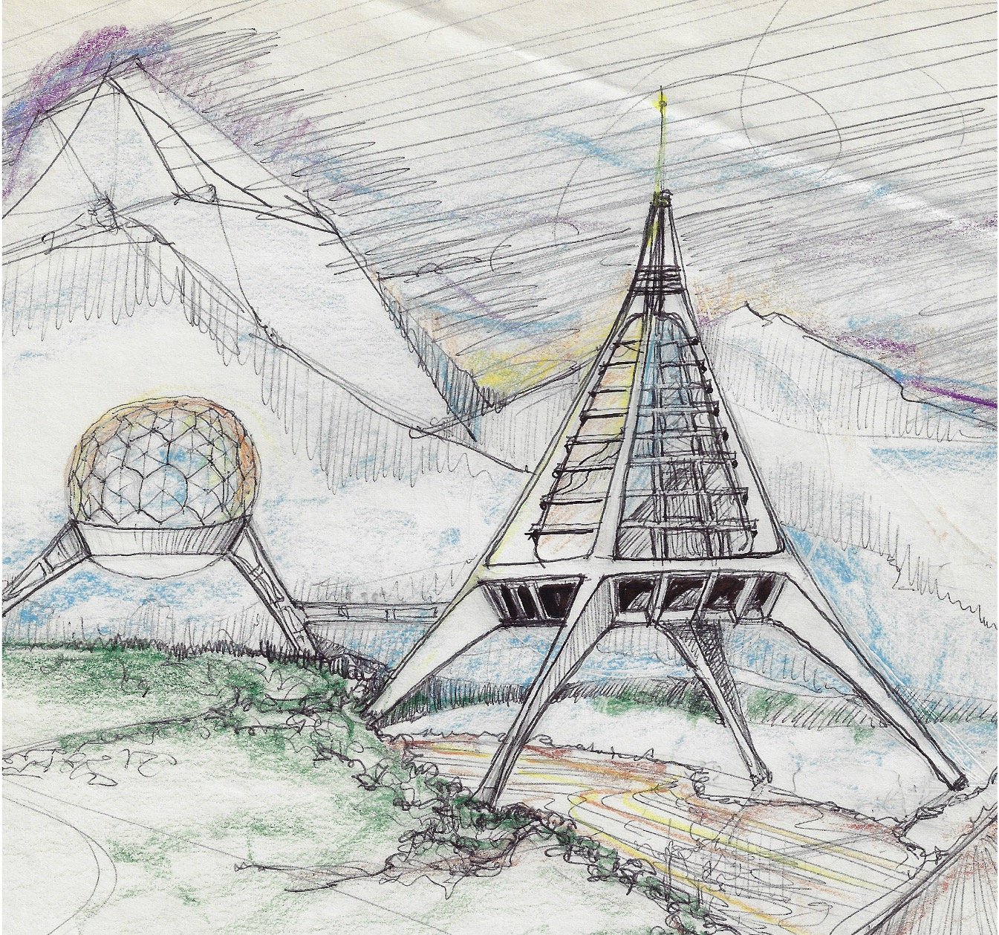
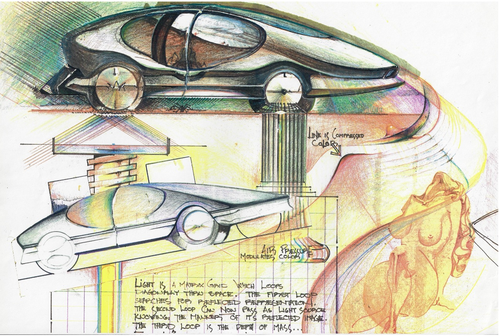
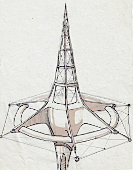
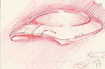
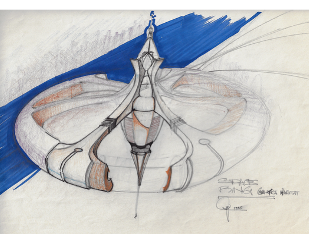
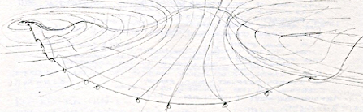
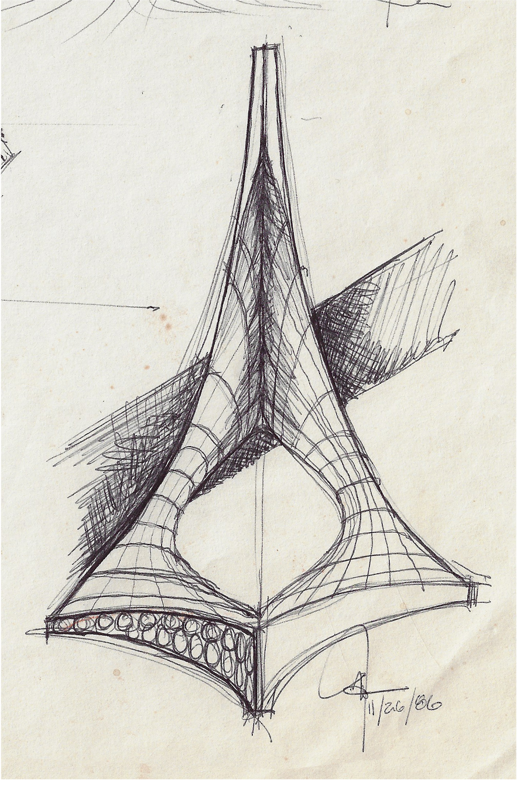
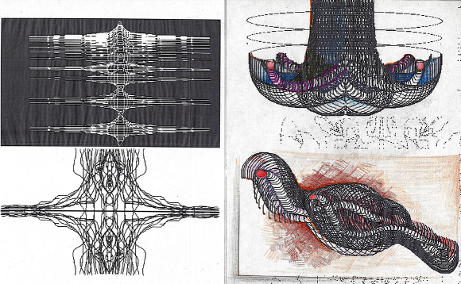
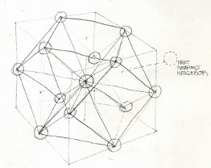
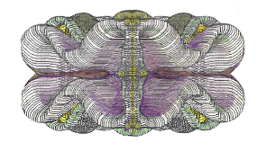
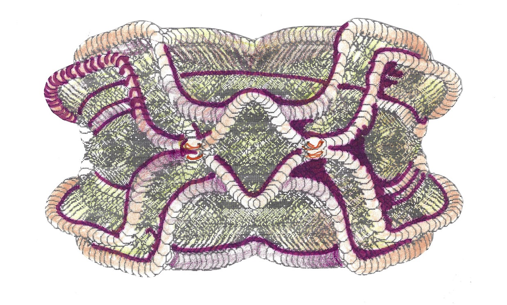